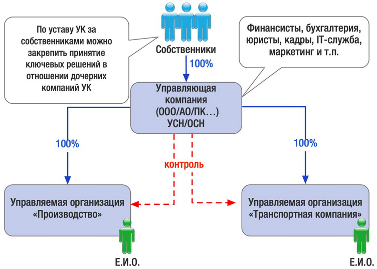

Management company for business, opportunities, options and risks
Why do you need Mc

- The need for all subjects of the group of companies in common auxiliary functions for them: accounting, legal, personnel, IT, marketing and other services. Separating them in a separate organization is managerially and economically more profitable than creating similar full-time services in each separate company.
Most often, managed legal entities do not have their own lawyer, accountant, or system administrator - all this is done by the personnel of the management company. Objectively, not every business is able to pull such a staff in every separate organization of the Group. But even with this type of organizational structure, there should be a central link managing field staff.
Therefore, there are cases of creation of functionally similar services to each other both in the Criminal Code and in a controlled society (for example, when the structure is ramified, when individual societies are significantly removed from each other and from the Criminal Code itself), however, in this case, the Criminal Code is engaged in solving strategic problems, then as employees of a managed company perform current work that does not require high qualifications and knowledge of the strategic business development plan as a whole.
-
Transfer of management from the plane “he is the most important here, everyone knows him” into the legal field. More and more owners want to formalize relations with their businesses and fix legal guarantees. Here, the motivating reasons are the possibility of official income in the form of dividends, ensuring inheritance. The obvious option is to create a single management company that owns and / or manages the rest of the group.
-
The general management code is also convenient in case of the opposite situation, when the owners participate in all the companies of the group, even getting into the “register of mass founders”. In addition to the obvious organizational difficulties in the form of unnecessary meetings of participants, visits to a notary, to banks and regulatory authorities, owners with such a structure increase their responsibility for companies, the real management of which is concentrated in other hands (the head of the department, for example). The segregation of ownership through a management company with a legal separation of areas of responsibility for decisions made can be an effective option, beneficial to both business owners and managers.
-
The ability to quickly carry out management accounting and develop, as well as adjust the previously developed strategy for the group of companies as a whole. Undoubtedly, business owners need to have full information regarding its functioning, financial performance, the degree of effectiveness of previously adopted management decisions. In this sense, the value of the direct receipt of information about all significant events directly to the “headquarters” is invaluable both for the owners and for the top management.
Options for formalizing relations with Mc
The regulation of the relationship of the management company with the controlled companies can be built in several ways:
First, through the inclusion of the management company in the list of participants / shareholders of controlled companies. In this case, the owners are directly involved only in the management company, and then their opinion and ownership control are transmitted through the elaboration of the constituent documents of the Group’s companies.

This design is convenient for owners and understandable for banks, investors, and counterparties. In addition, the corporate ownership structure allows a number of tax incentives to be used to redistribute profits within the group of companies.
The second way is using contractual structures, namely:
contract for the provision of paid services (for the provision of accounting, legal, etc. services);
contracts for the performance of the functions of the sole executive body.
The choice of one or another contractual instrument depends on a number of factors and the specifics of the structure of the group of companies.
Sergeev Stepan Viktorovich
1st year Master of Applied Mathematics and Informatics
Development and innovation